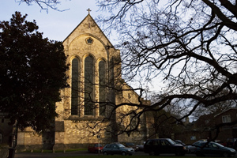

|
Romsey Abbey Romsey Abbey was originally built during the 10th century, as a Benedictine foundation. The surviving church is the town's outstanding feature and this is all the more remarkable because the abbey, as a nunnery, would have been less well financially endowed than other religious establishments of the time. www.romseyabbey.org.uk Winchester Cathedral |
 |